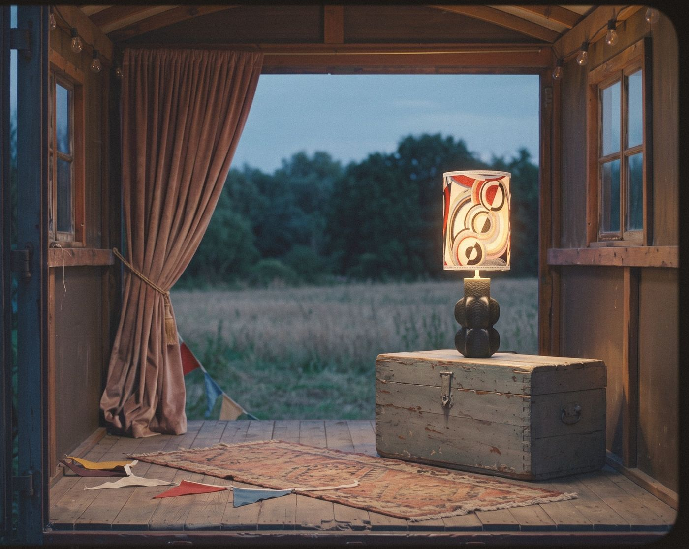
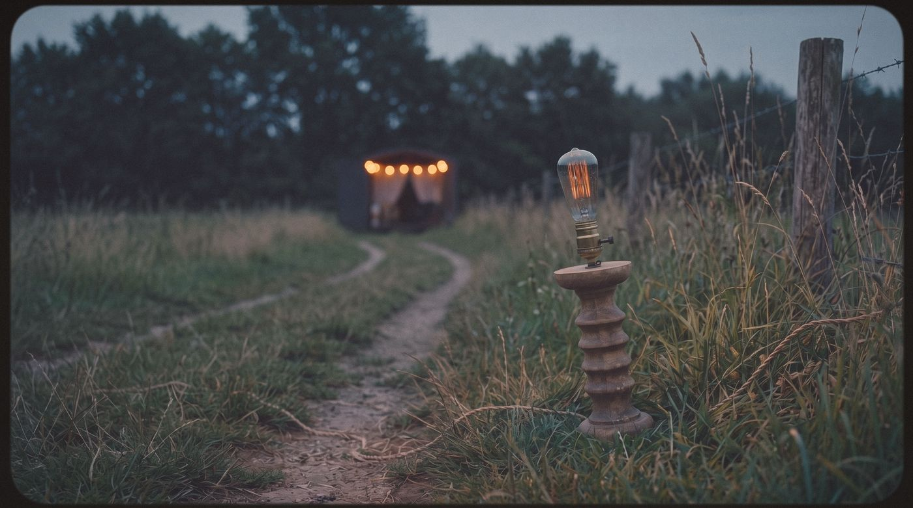
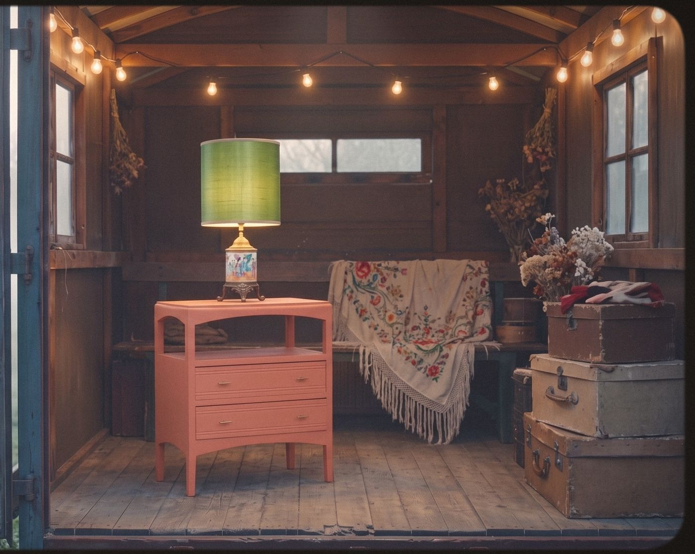
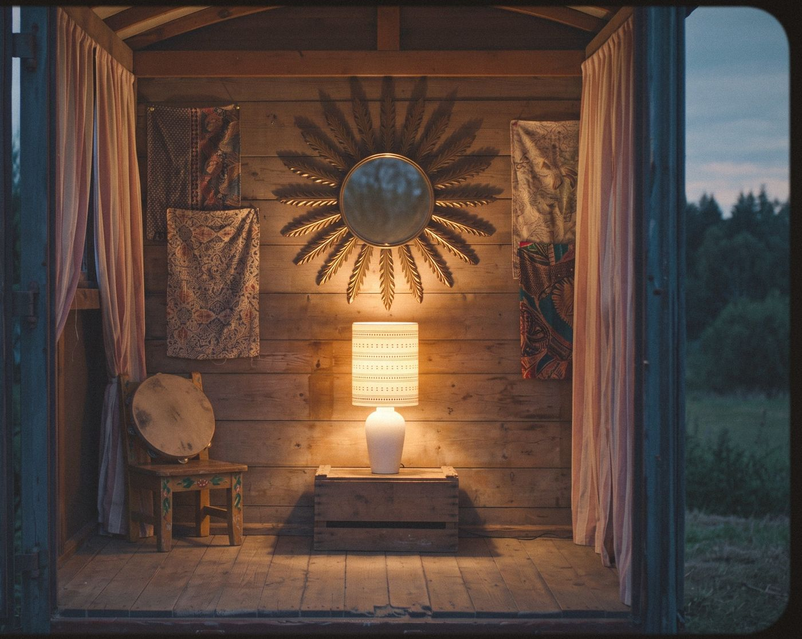

Quand j'étais petite, je voulais habiller le monde. Je dessinais des robes pour les chaises et je cousais des histoires aux ourlets des rideaux. Je croyais que tout pouvait devenir autre chose, pour peu qu'on lui en laisse l'occasion.
Personne ne m'a dit d'arrêter. Alors je n'ai jamais arrêté.
Ce matin, la troupe a repris la route.
Elle n'est pas bien grande. Quelques silhouettes qui ont déjà vécu, chacune à sa place sous une couverture. Mademoiselle Opaline, qui garde de son premier rôle un faible pour les soirs de pluie. Monsieur Alphonse, timide jusqu'à ce qu'on lui rende sa lumière. Et la Petite Berthe, pas très droite mais tout à fait sincère, que j'ai gardée sous mon manteau pour qu'elle n'ait pas froid.

Aucun n'a été choisi. Ils viennent à moi.
Un soir, sans prévenir, ils apparaissent au bout du chemin, un peu dégingandés, le pas traînant, l'air de s'excuser d'exister. Certains ont perdu un bout d'eux-mêmes en route. D'autres portent la poussière d'une vie que je ne connais pas. Il y en a qui ont beaucoup servi. D'autres, pas assez. Et semblent croire que leur tour est passé.
Je connais cet air-là.
Ils se tiennent dans le contre-jour et attendent que je dise quelque chose.
Je ne dis rien. J'écoute.

Ils parlent à leur manière. Un pli, une éraflure, une odeur de grenier, une façon de pencher la tête. Ils racontent les maisons qu'ils ont connues, les mains qui les ont touchés, les jours de fête ou les longues années tranquilles.
Il y a des histoires qu'on devine. D'autres qu'on invente un peu. Je n'ai jamais été très douée pour distinguer les deux.
Alors je sors mes tissus.
Un costume de lin, une parure de fleurs, un fil bien choisi. Parfois il suffit de presque rien. Parfois il faut tout défaire pour recommencer. Les plis que la vie a laissés, je les garde. Aucune nouvelle étoffe ne saurait les raconter.
Je ne cherche pas à leur rendre leur jeunesse. Ce serait leur faire une drôle de promesse.
Je préfère leur inventer un avenir.
Et lorsqu'ils se redressent, tout étonnés de se découvrir encore beaux, il m'arrive de croiser mon propre reflet dans le miroir de l'atelier.
La route sent le foin et le thé froid. La roulotte grince à chaque virage. Et ça ressemble à un rire. Dans mon sac, des bobines, quelques boutons orphelins et un fond de lumière de fenêtre soigneusement pliée.

C'est ça, ma Bohème. Mélanger ce qui n'a pas l'habitude d'aller ensemble et voir ce qui arrive.
Tout peut arriver. Et souvent, c'est joyeux.
Il m'arrive de prendre un chemin simplement parce que je ne l'ai jamais pris. Et quand on me demande où je compte m'arrêter. Je réponds : « Je verrai bien. »
Certains aiment savoir ce qui les attend. Moi, j'aime encore être surprise.
Chez nous, on entre toujours par le désordre. Les chaises ont des caractères de diva, les lampes se prennent pour des étoiles et les coussins changent de place quand on a le dos tourné. Chacun apporte son passé, ses manies, ses petites extravagances.
Puis, sans qu'on sache très bien comment, tout ce petit monde trouve sa place.
Les visiteurs font la même tête que moi autrefois : d'abord la curiosité, ensuite une joie sincère. Parfois un petit silence. Et l'on sait qu'un coup de cœur vient de monter à bord.
J'aime ces instants-là. Quand quelqu'un reconnaît dans un objet quelque chose qu'il ne cherchait pas. Un souvenir, peut-être. Ou l'envie soudaine d'une vie un peu différente.
Alors je l'emballe avec soin et lui souhaite bonne route.
Je ne suis jamais triste de les voir partir. Enfin, presque jamais.
Ce soir, nous nous arrêterons dans une prairie. J'allumerai mes petits soleils de poche. Mademoiselle Opaline fera sa révérence, Monsieur Alphonse prendra un air solennel et la Petite Berthe, si elle est d'humeur, acceptera enfin de se tenir droite.

Le rideau se lèvera, comme chaque fois, tout seul.
Il y aura peut-être trois spectateurs. Peut-être trente. Ce n'est pas l'important. La troupe aura joué et demain nous recommencerons.
Il reste tant de choses à découvrir. De rencontres à faire. De tissus que je n'ai pas encore osés. Et de personnages qui ignorent qu'ils ont, eux aussi, droit à un deuxième acte.
Et moi ? J'ai encore quelques rôles en tête. Je ne sais pas combien de villages nous attendent. Ni combien de fois il faudra changer de costume, de décor ou de chemin.
Mais ce n'est pas parce qu'on a déjà vécu une belle histoire qu'on a l'obligation d'en rester là.
La relâche n'est pas encore à l'horaire.
À bientôt, sur la route.
Bernadette